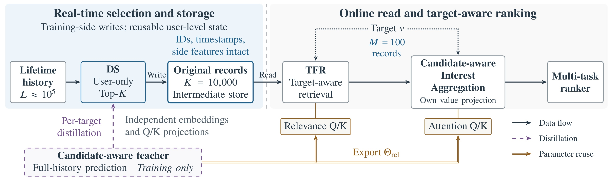
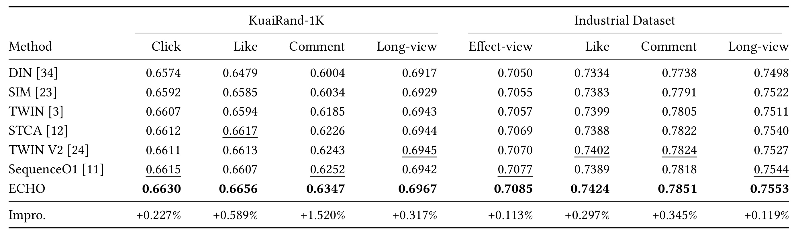
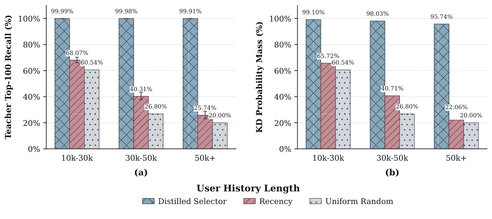
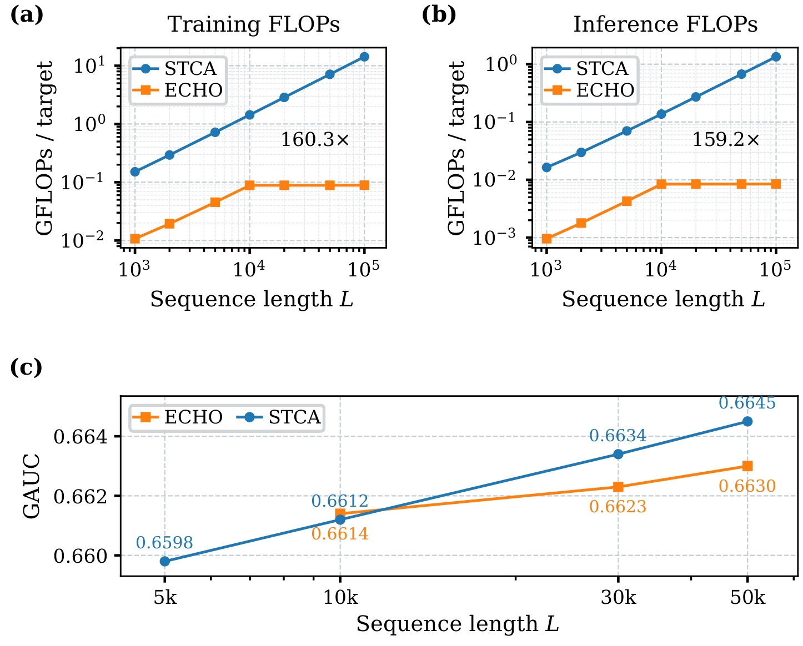
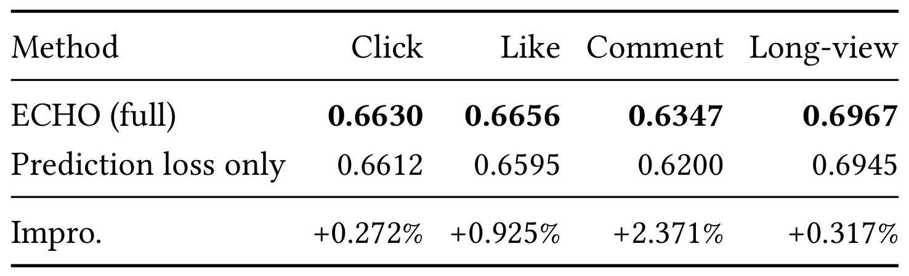
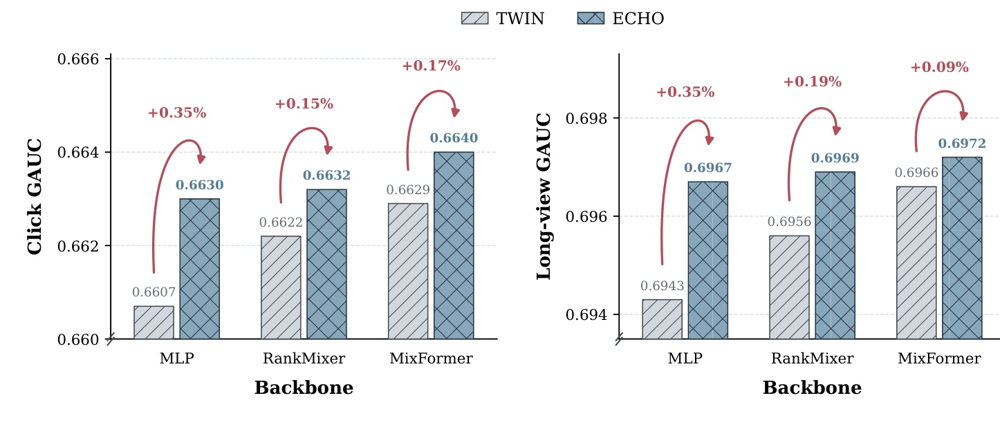

快手 ECHO：用候选感知蒸馏保留十万条历史中的原始事件
论文：ECHO: Efficient Cascade with Homogeneous Operators for Distillation-Guided 100K-Sequence Modeling。作者 Wenhao Li、Qinglin Jia 等，第一作者机构为快手。论文入口：arXiv:2610.28569。首版发布于 2026-10-20 17:28 UTC，北京时间为 10 月 21 日 01:28；本笔记日期为 2026-10-22。本文依据原论文十二页全文及附录，数值均为作者报告，本轮未独立复现实验。未核验到独立官方代码或项目入口。首页会议、年份、DOI 与末页收稿记录仍含 ACM 模板占位，不能据此认定正式会议录用。
终身行为能够提供长期偏好证据，但十万条历史使候选感知排序过于昂贵；直接检索原序列的成本随历史长度增加，而潜变量压缩虽然节省计算，却会失去逐条访问原始行为的能力。
1. 背景和问题
理解 ECHO 首先要区分“历史有多长”和“每个候选需要处理多少历史”。快手活跃用户一个月可以积累上万次行为，终身窗口进一步达到十万量级。最近交互主要反映当下意图，远期行为还能记录稳定喜好、周期性兴趣和偶发但重要的长尾偏好。扩展窗口因此可能有收益，然而一次排序请求会为同一用户评估多个候选。如果每个候选都读取并匹配完整历史，序列长度和候选数相乘，长期证据的利用就容易越过线上吞吐与延迟预算。
传统的两阶段检索将问题拆成粗检索与精聚合。SIM、TWIN 等方法先用较轻的相关性算子从历史里找出少量行为，再进行更强的目标注意力。它们的优点是证据仍然是一条条事件：下游可以知道用户在什么时间对什么物品发生过什么行为，也能结合侧信息匹配当前目标。这里的“可寻址”不是对解释性的泛泛描述，而是下游仍能独立选中某个具体事件。问题在于粗检索本身仍要为每个目标扫描长历史，把最终聚合从十万缩到一百，并没有自动消除前面那次十万规模的候选相关计算。
另一类方案把历史事先压成有限个兴趣向量、草图或隐状态。候选只与固定数量的状态交互，成本自然更好控制。但历史在目标尚未出现时就被混合进少量表示，不同兴趣可能挤在同一个槽位；当某个冷门目标只依赖几次分散交互时，这些细节可能已经被平均掉。SequenceO1 的固定草图和缓存复用代表这种方向，其近期分支能够补充新鲜信息，但草图中的原始事件不再能单独检索。TWIN V2 进一步通过行为簇将“先压缩再检索”结合起来，代价则是同簇内记录不再保有完整的独立在线访问方式。
ECHO 选择了不同的压缩对象：压缩的是可搜索事件集合的基数，保留下来的仍然是原记录。设历史长度为十万，用户级选择器先留下约一万条原事件；等具体目标到来，再从这一万条里检索一百条做兴趣聚合。这样既不需要每个候选扫描十万条，也不要求每条历史先变成混合的潜在槽位。它的研究问题可以表达为：在目标出现之前，是否能学会保留一个足够宽的原事件“证据仓库”，让未来多个目标还能从中找到各自的证据？这比单纯缩短序列更难，因为同一用户喜欢的目标并不一致。
难点恰恰出在用户级与目标级的矛盾。选择器只有用户特征，它不能针对当前候选临时调整保留集合；但有用历史由当前目标决定。论文用一个能访问完整历史和当前候选的教师，把训练流中不同目标的相关性分布传给用户级学生。这里的蒸馏不是生成文本，也不是让学生复制最终点击概率，而是让学生学习“历史中哪些位置值得保留”。教师逐目标给出监督，学生则对同一用户共用一套位置得分，最终学到的是训练目标分布下的折中证据集合。
另一个障碍是级联里的评价标准不一致。上游认为相关的事件，如果到了精排序却被另一个相关性算子视为不相关，有限预算会在级联间不断损失。ECHO 沿用 TWIN 的一致性思想，把教师学习到的查询与键相关性参数同时导出给细检索和目标注意力打分，使“教师偏好什么、细检索选什么、聚合怎样分权”尽可能使用同一把尺子。不过学生自己的用户与历史编码器仍然独立，这个区别关系到梯度隔离，也意味着不能将整套模型描述为从选择到排序完全共享所有参数。
本文最值得关注的贡献因此是预算与证据粒度的结合，以及围绕它构建的双图训练和用户状态服务。它并不承诺压缩无损：第一层舍弃的事件，第二层再精确也无法取回。特别是训练中少见的目标、突变兴趣或极稀疏长尾证据，都可能在用户级预选择时失去。因此，评估既要看最终 GAUC，也要看教师证据召回、保留概率质量、不同长度分组和系统成本，不能用某一个近乎满分的内部指标替代全部结果。
从工程迁移角度看，原始记录作为中间表示还有一个实际优势：它不把下游锁定在某种专用潜在编码上，现有排序器可以继续使用事件 ID、时间戳与侧信息，改变特征交互网络时也较容易接入。对应的成本是额外的用户级状态、刷新链路、编码协议和训练与服务版本同步。这些系统条件必须与模型一起考察，才能判断这项改造究竟是在降低主要瓶颈，还是把计算转移到另一个此前未计量的环节。
还需要区分“逐目标监督”与“在线目标感知选择”。训练样本里的不同目标可以反复教学生哪些位置重要，但推理时存储里仍是同一份用户集合，不能随候选临时增加一条已删事件。对于多样兴趣用户，选择预算越紧，不同目标之间的竞争越明显；某些只偶尔出现的目标，其证据可能被高频目标共同占用的行为挤出。这是用户级蒸馏的结构性约束，并非调高细检索精度就能解决。因而论文用较宽的一万条集合承接蒸馏，又把精确的一百条检索留给候选，这两个预算各自承担不同责任。
模型名称中的“Homogeneous Operators”也不应被过度解释为新型通用注意力。论文的核心计算仍然建立在多头内积相关性、Top-K、目标注意力和多任务预测上，创新主要是这些组件如何在训练与服务时间上组合。相较追求一个更复杂的序列编码器，它强调用学习监督确定搜索空间，并通过相关性参数复用让这个空间真正服务下游排序。它对现有系统有吸引力，也意味着收益会依赖现网已经使用的压缩、检索及特征共享策略。
2. 方法
2.1 Framework Overview 与 User-Level Sequence Compression：先保留原记录
模型把时间有序历史记作 $\mathcal H=((x_j,\tau_j))_{j=1}^{L}$。同一个物品的重复交互占据不同位置，因此压缩单位是事件而非唯一物品。第一层预算 $K$ 决定用户共享状态的容量，第二层预算 $M$ 决定每个目标最终聚合的事件数，满足 $M\ll K\ll L$。生产设置为 $K=10,000$、$M=100$，原始历史最多十万。选择器 DS 在实时训练侧维护，排序训练图和在线请求都读取已存储记录。

图 1 中黑色箭头表示原事件的数据流，紫色虚线表示全历史教师向 DS 提供逐目标蒸馏，棕色箭头表示教师相关性参数流向检索与聚合。左侧不是在每次请求里重新运行的前置网络，而是训练侧写入可复用用户状态的过程。DS 输出仍含物品身份、时间戳与侧信息，经过中间存储后，右侧 TFR 才依据具体目标挑出百条记录。这个时间边界解释了为何同一个用户的多个候选能够共享长历史处理，也解释了压缩状态为什么存在适应延迟：目标到来时只能查询已经保留的集合。图中聚合模块仍有自己的 value 投影，教师和学生也有独立的 embedding 与查询键变换，因而“同质算子”应理解为相关性标准的一致，而非把全部表示参数绑成一套。框架的业务价值来自把昂贵、可共享的历史筛选移出逐候选路径，并让有限保留集合继续承载原事件证据；其前提是训练侧教师能为未来候选提供足够好的覆盖监督。图里的教师只在训练中使用，所以不能将在线公式中没有教师项误读成全系统从此不需要全历史计算，实时训练仍然要承担教师和选择状态维护工作。 DS 以用户特征 $a$ 编码为 $e=f_{user}(a)$，每条事件独立编码为 $z_j^S=f_{hist}^S(x_j,\tau_j)$。它的多头相关性均值为原式（1）：
符号解释：$H_s$ 是学生头数，$W_Q^S,W_K^S$ 是学生投影，$s_j^S$ 是与目标无关的位置分数。填充位置必须屏蔽，不能参与选择或归一化。原式（2）直接选择事件位置：
符号解释：$I_K$ 是按得分排列的位置列表，$\widetilde{\mathcal H}$ 是保留的原记录序列。选择分数不混合记录内容，所以保留下来的事件仍可由后续目标独立定位。对应代价是离散截断：未进集合的事件无法靠细检索恢复。 全历史教师用独立的历史编码 $z_j^T$，并结合请求上下文 $c$ 和目标特征 $x_v$ 产生查询。原式（3）为：
符号解释：$H_t$ 是教师头数，$s_{v,j}^T$ 随目标改变。教师通过真实行为标签学习哪些历史与预测相关，然后才把相关性作为学生的监督。它不是离线固定的一套启发式规则，也不是预先训好后永久冻结的模型。 对批次 $\mathcal B$ 中每个用户目标样本 $b$，分别以温度 $T$ 得到 $p^T_{b,j}=\operatorname{softmax}_j(s^T_{b,j}/T)$ 和 $p^S_{b,j}=\operatorname{softmax}_j(s^S_{b,j}/T)$。原式（4）的分布匹配为：
符号解释：$L_b$ 为样本有效历史长度，$\operatorname{sg}$ 表示停止梯度。相同用户的学生分布在多个目标间共享，教师分布则逐目标变化；学生由此学到覆盖这些目标的用户级优先级。软分布提供“相关程度”信息，比只告诉学生是否属于教师前若干条更细。 仅优化分布并不能保证重要事件刚好跨过 Top-K 截断边界。论文因此使用更尖锐的教师分布 $\widetilde p^T=\operatorname{softmax}(s^T/T_m)$，其中 $T_m<T$，在保留集合外找教师最偏好的漏选事件，在集合内找教师最不偏好的已选事件。原式（5）可写为：
符号解释：$j^+$ 是漏选的高价值位置，$j^-$ 是可能被替换的低价值位置，$n$ 是最多挖掘对数。两侧按教师质量排序后对齐配对。原式（6）与（7）合成一个边界校正组：
符号解释：$\mathcal V_b$ 为有效配对，$\delta$ 为要求正例分数超过负例的间隔，$T_{rank}$ 控制排序损失尺度，$\epsilon$ 防止分母不稳定。教师不偏好漏选位置时权重为零；挖掘位置和权重停止梯度，抽取出的学生分数仍然可微。训练并未通过离散 Top-K 强行反传，而是对边界两侧可微分数施压。这也表明方法的核心是两种监督互补：全分布学习总体偏好，边界损失直接处理保留决策的错误。
2.2 Target-Aware Retrieval and Aggregation 与 Training Objectives：统一相关性标准
有了保留状态，TFR 针对每个目标在 $K$ 条记录上用 TWIN 风格多头检索，得到最多 $M$ 条记录，再进行目标注意力聚合，把兴趣向量交给多任务排序器。教师的相关性参数 $\Theta_{rel}$ 同时导出到 TFR 和注意力打分模块；value 变换仍由聚合模块自己学习。输入是用户共享原记录和目标特征，输出是当前目标相关的兴趣表征，这一输出仍能接入不同特征交互骨干。 原式（8）描述选择图的总目标：
符号解释：$\mathcal L_{pred}$ 为教师多任务预测损失，$\alpha,\beta,\gamma$ 是权重。只有预测损失更新教师；蒸馏和边界损失只更新学生。独立 embedding 与教师分布的停止梯度共同保证这条边界，因此不能把三项相加理解为三项都更新所有参数。排序图则只以自身的 $\mathcal L_{rank}$ 学习真实标签，不额外做蒸馏。
算法 1 的两个循环并发运行在同一实时数据流上：选择图按用户分组，更新教师与 DS，写出保留记录并同步相关性参数；排序图从存储读记录，对候选做检索、聚合和预测训练。在线只保留后一个循环里的读取、检索、聚合与最终预估。用户级状态复用、教师监督和参数复用是三条不同的连接：第一条控制重复计算，第二条学习压缩策略，第三条降低级联内相关性偏差。实现时应单独核对状态版本与参数版本，否则一个旧集合配一个新相关性函数会让离线假设与线上执行脱节。论文没有给出完整的版本一致性服务协议，因此这属于迁移时应补的工程验证，不能冒充原文已解决的机制。
2.3 Complexity Analysis 与 Deployment Optimizations：把预算转成服务成本
原式（9）分离出在线主要序列交互：
符号解释：$C$ 为候选数量，$H_r,d_r$ 是检索头数与实际打分宽度，$H_a,d_a$ 是聚合头数与每头宽度。读取共享记录另需 $O(K)$ 数据传输。固定 $K,M$ 后，在线这部分交互不再依赖原始长度 $L$；但候选数仍然影响成本。此复杂度不含特征投影、离散选择和挖掘、存储访问与排序器其他部分。训练仍有全历史教师的 $O(BLH_td_t)$ 和 DS 的 $O(LH_sd_s)$ 工作，因此“在线预算有界”不能扩展成“所有训练都与长度无关”。
部署先对同一用户的训练样本分组，将公共历史只加载一份到 GPU，候选专属特征仍分别处理。其次按字段值域固定打包位宽：生产示例八个 int64 字段为每事件 64 字节，打包后是 43 字节，一万事件的纯记录负载从约 0.64 MB 降到 0.43 MB。十亿用户的示意计算为单副本 640 TB 降到 430 TB，差额 210 TB，尚未计复制、索引和存储系统开销。连续用户键值允许一次逻辑读取，但不等于一次操作就没有网络、分片和尾延迟成本。 第三项优化是原式（10）的线性代数重排：
符号解释：$q$ 是查询向量，$h$ 是历史向量，$W_Q,W_K$ 是线性投影。把键侧矩阵吸收到查询侧后，不必逐历史位置显式生成键向量，也不必维持同等规模的 projected-key 缓存。这项等价依赖线性内积形式；若在键变换后插入非线性、归一化或其他位置相关操作，就必须重新判断能否重排。ECHO 的系统设计与其同质相关性算子契合，并不是任意注意力架构都可以不加验证直接获得同样节省。
3. 实验结果
3.1 Overall Performance：八任务结果与配置口径

表 1 的前四列来自 KuaiRand-1K，按 Click、Like、Comment、Long-view 排列，ECHO 分别为 0.6630、0.6656、0.6347、0.6967。各列最强基线并非同一个模型：点击是 SequenceO1 的 0.6615，点赞是 STCA 的 0.6617，评论是 SequenceO1 的 0.6252，长观看是 TWIN V2 的 0.6945。对应相对提升为 0.227%、0.589%、1.520%、0.317%。工业数据四任务为有效观看、点赞、评论、长观看，ECHO 为 0.7085、0.7424、0.7851、0.7553，对比各列最佳基线的相对提升为 0.113%、0.297%、0.345%、0.119%。这些是 GAUC 的比例变化，不是相加的百分点。例如评论从 0.6252 到 0.6347 的绝对差是 0.0095，除以基线后才得到约 1.520%。表里最醒目的评论增益也不能替代点击或观看任务的较小增益，更不能直接解释为相同幅度的线上业务变化。 主表还呈现了任务间不同的基线结构：工业有效观看与长观看的最佳基线来自 SequenceO1，点赞与评论的最佳基线来自 TWIN V2。因此这里的八列提升是逐列选择最强对手后计算的结果，并不是把同一个基线作为分母。工业评论从 0.7824 到 0.7851 的绝对差只有 0.0027，比例约为 0.345%；这也提醒读者同时查看原始 GAUC 与相对提升，不能凭百分号大小判断各任务对业务的最终重要程度。
比较配置是判断主表的重要补充。附录 A.2 将 DIN 最大历史设为 100；SIM 和 TWIN 的粗检索输入为一万；STCA 以平均两千训练、外推到一万推理；TWIN V2 把最近五万压到约一万个代表单元；SequenceO1 把相同历史压成一百草图 token；ECHO 的离线最大原始历史为五万，保留一万。所有两阶段检索方法最终检索预算均为一百。因此主表支持“在论文指定预算与实现方式下八任务最好”，不能推出在相同原历史长度、相同训练量和相同模型容量下全面更优。后面专门的长度实验出现 STCA 更高，正说明配置口径必须与表格一起读。
所有实验使用 A800 与混合分布式训练。公开集使用 Adam，学习率 0.001、批量 256；工业集稀疏和稠密参数学习率分别 0.001 和 0.0005、批量 3000。论文强调其大规模工业场景中相对 GAUC 的小变化具有业务意义，但没有在表 1 同时提供完整多次种子波动或每格置信区间，因此此处记录为作者报告的离线结果，不把业务经验阈值当成适用于所有公开数据任务的统计检验结论。
3.2 Selected History Analysis：教师证据保留到了什么程度

图 3 左侧评估教师 Top-100 事件有多少进入 DS 保留的一万条，右侧评估保留集合覆盖了教师全历史相关性分布的多少质量。两种量不是同一件事：一个衡量最尖锐证据有没有漏，一个衡量更广泛的注意力支持有没有保住。按历史长度分组，左图 DS 达到 99.99%、99.98%、99.91%，而最近截断下降到 68.07%、40.31%、25.74%；右图 DS 为 99.10%、98.03%、95.74%，最近截断仅为 65.72%、40.71%、22.06%。正文给出的整体均值分别是教师 Top-100 召回 99.976% 和全历史概率质量 98.509%。这很好地解释了为何一个用户级集合仍可服务多个目标：它不必复制教师精确的前百条次序，只需用一万的容量覆盖教师最关心的一片区域，目标级检索再从中筛选。但指标以同一个学习教师为参照，近乎完美的召回首先证明蒸馏与保留策略的自洽，尚不能证明教师没有忽略新兴趣或长尾目标；线上增益与真实标签指标才提供了另一层外部证据。
原图 4 进一步区分“等预算交叠”和“宽集合覆盖”。DS 与教师都取 Top-100 时交叠 67.58%，取 Top-10K 时为 82.45%；这与一万集合几乎覆盖教师前百条并不冲突，因为集合大小不同。以教师 Top-10K 的注意力质量为参照，DS 保留预算为 100、1000、一万时分别召回 70.84%、91.65%、99.38%，最近截断只有 0.43%、5.14%、55.93%。这说明学生利用宽集合进行保守覆盖的策略比要求它逐目标精确排序更合理，也支持把最终百条选择留给 TFR。
原图 2 中，相比最近一万历史的 TWIN，ECHO 在不到一万、1–3 万、3–5 万、超过五万历史用户上的相对 GAUC 增益为 0.045%、0.215%、0.555%、1.279%。当固定窗口遗漏更多远期证据时，学习选择的收益更明显。预算缩为保留五千、检索五十，GAUC 为 0.6618，对照 0.6603；缩为两千与二十，分别为 0.6599 与 0.6585。这些结果支持预算分配本身有用，但不同预算并非可不加条件替换的生产配置，仍需考虑具体用户结构与损失。
原图 5 发现总体 46.08% 的保留行为位于最近一万交互之外，最长历史组达到 75.09%。它证明 DS 不只是模仿最近截断；同时图中的“年龄”按之前还有多少次交互定义，不能换算成天或月。高活跃用户一万次交互与低活跃用户一万次交互的自然时长不同，复现若要判断兴趣衰减，应把时间间隔和交互位置分开统计。
3.3 Efficiency and Length Scaling：有界计算的收益与质量代价

图 6 必须分成两类证据阅读。上面两幅使用附录 A.3 的解析计算估计每目标的序列分支 FLOPs，横纵轴均采用对数尺度；下面一幅来自独立长度研究，纵轴是 GAUC。到十万历史时，STCA 与 ECHO 的训练估算分别为 14.262927 和 0.088960 GFLOPs，推理为 1.346437 和 0.008456 GFLOPs，对应比值约 160.3 倍与 159.2 倍。橙色曲线在一万以后接近水平，是因为保留预算固定；其剩余增长来自摊销的选择刷新。这不是线上端到端延迟提升一百六十倍，也不是全系统实测吞吐提升一百六十倍。图下方直接展示了压缩存在预测质量代价：ECHO 在一万、三万、五万长度分别为 0.6614、0.6623、0.6630；STCA 对应为 0.6612、0.6634、0.6645，五万时 STCA 比 ECHO 高 0.0015。这里没有十万长度的同口径 GAUC 点，所以不能把十万 FLOPs 比值与五万 GAUC 拼成“十万质量相同而速度更快”的结论。更准确的理解是，ECHO 用较低且增长缓慢的候选相关计算，仍获得不断增加的历史收益，但没有保住直接全历史建模的全部质量上限。
估算的假设也应一起保留。附录令同用户共享候选数在训练为 40、推理为 300，假定选择缓存命中率为 0.5 和 0.6；有效保留预算为历史长度与一万的较小值。STCA 重建为四层、宽度 128、四头，SwiGLU 扩展比例为四。一次乘加计两个 FLOPs，训练可训练矩阵操作的前反向近似为前向三倍，冻结选择刷新只计前向。在线参数组合预计算，训练中则按用户组和候选数摊销。这个模型有利于解释成本随长度的斜率，但实际服务中低共享率、低缓存命中、状态访问开销和离散检索实现都可能改变收益。
尤其要区分第 3.6 节的完整实时训练讨论和附录成本估算里的冻结选择刷新。前者仍含随长度增长的活教师和蒸馏工作；后者面向特定架构及状态复用假设计算序列分支成本。若迁移时还要另跑完整教师训练流水线，应单独核算它的资源，不能仅拿图上的训练比值推断整个模型生产体系的总 GPU 节约。论文没有提供相应完整账单，也没有给出同硬件端到端 p99 延迟曲线，当前证据的强项是架构预算分析，实测系统收益尚有补证空间。
3.4 Ablation Study 与 Online A/B：监督组合、骨干与真实业务

表 2 把完整 ECHO 与“只有预测损失”的学生比较，点击从 0.6612 到 0.6630，点赞从 0.6595 到 0.6656，评论从 0.6200 到 0.6347，长观看从 0.6945 到 0.6967，相对变化为 0.272%、0.925%、2.371%、0.317%。评论任务的下降最明显，提示只用最终预测标签训练用户级保留策略时，稀疏反馈相关的历史证据可能更难学好。但这项对照同时移除蒸馏损失和边界辅助损失，并给学生增加独立预测头。因此它验证的是整套教师监督选择方案相对该预测训练变体的价值，不能单独归因于 KD，更不能据此估算辅助项自身贡献。要明确边界损失有没有解决截断问题，还需要固定预测头和其他结构，仅去掉辅助损失，并观察漏选高质量事件及最终 GAUC 的变化。类似地，教师参数复用的单独作用也不能从这张训练目标表里直接读出来。完整方法含有彼此配合的机制，对整体增益的肯定与对各机制独立因果贡献的保留，可以同时成立。 进一步看点击与长观看，只有预测变体的值恰好接近主表里部分强基线，但不能因此把它直接视为同一个 STCA 或 TWIN V2 实验，因为输入选择、预测头和训练图均有差异。表中的“仅预测”是作者构造的内部变体，其科学用途是检验特定训练替换的后果，而不是为外部方法新增一条同配置排名。若要识别边界辅助项是否改善入选门槛，应同时报告集合外教师高分事件的漏选率，而不是只追踪最终评论一列。
附录温度扫描在 $T=1,2,4,6,8$ 时点击 GAUC 分别为 0.6617、0.6625、0.6630、0.6622、0.6613，最优是四。温度过低只强调极少数尖锐证据，过高又弱化相关性差异，适中软化可能让学生兼顾覆盖与区分。不过温度四只是在这个数据和参数组合下较好，不能视为跨业务固定常数；辅助挖掘还有更低温度 $T_m$，两者的作用应分开调试。

图 8 在同一公开数据集比较 MLP、RankMixer 和 MixFormer 三种骨干，左图是 Click，右图是 Long-view。点击在 MLP 上由 0.6607 到 0.6630，在 RankMixer 上由 0.6622 到 0.6632，在 MixFormer 上由 0.6629 到 0.6640；长观看则由 0.6943 到 0.6967、0.6956 到 0.6969、0.6966 到 0.6972。六组都为正，说明保留原事件的前置选择可以配合不止一种最终特征交互网络，方法收益不完全依附简单 MLP。但更强骨干上的相对收益通常变小，尤其 MixFormer 长观看只提升约 0.09%，不能用 MLP 的约 0.35%概括全部条件。这里变更的是最终排序骨干，前面的教师、选择与相关性级联仍在，因此“可适配”也不等于对任意检索、任意任务或任意模型架构都成立。
线上证据来自快手最大短视频推荐场景的七天 A/B，实验桶分配 5% 生产流量。论文所述场景整体超过四亿日活、每日五百亿条交互日志，这是业务场景规模，并不是本轮实验实际独立用户数。对照生产系统已包含 TWIN 检索和类似 C-Former、SequenceO1 的压缩机制，ECHO 是在强现网基础上继续集成，而非替换只有短序列的弱基线。作者报告 Total App Usage Time 相对增加 0.613%，每用户该指标增加 0.640%。这使方法超出纯离线自洽：它在现网指标上也显示价值。但正文未提供完整置信区间、完整护栏指标与分群效果，七天也不足以刻画所有长期反馈，不能把时长增加直接延伸为留存、满意度或生态健康必然改善。
4. 总结
ECHO 给出了一条有辨识度的超长序列路线：把十万条原历史缩为可跨请求复用的一万条原事件，再针对候选缩到一百条，借全历史教师的逐目标相关性监督解决用户级选择的目标缺失，用共享相关性参数降低级联标准错配。其主要证据由八任务 GAUC、教师证据覆盖、长度与预算研究、跨骨干实验和七天线上 A/B 组成。值得迁移的不是某个孤立倍数，而是在明确预算下保持证据可寻址，同时把昂贵工作放到可以共享的位置。
局限至少有四项。第一，第一层选择不可逆，极长尾事件一旦被丢弃，后续再强的目标检索都无法访问，附录也明确承认这一点。第二，选择器经训练和状态刷新才适应目标变化，新兴趣的恢复依赖样本、参数更新与刷新链路，不能像在线全历史注意力一样立即访问所有事件。第三，教师参照指标会继承教师偏差，Top-100 近满召回只描述对这位教师的保真度，不能证明所有潜在兴趣被保住。第四，主表配置不是严格同原历史长度，长度实验的 STCA 在五万处更高，方法存在质量与预算取舍。第五，计算收益依赖共享候选数和缓存命中等假设，现有论文未给完整端到端延迟和全训练资源对照。第六，训练消融同时改了多个因素，还不足以拆开蒸馏、边界辅助和参数复用的独立贡献。
后续跟进可以围绕三个能够改变工程判断的问题展开。首先在固定编码器、预测头和相同预算下补齐只去 KD、只去辅助损失、取消相关性共享的实验，联合报告真实标签与教师保真度，确认瓶颈究竟在监督稀疏还是级联错配。其次把候选数、缓存命中率和选择刷新周期扫成成本曲面，计入完整教师训练、状态写入、网络传输和 p99 延迟，检验图上的计算节省有多少能转成实际资源收益。最后对突发兴趣、稀有目标、长尾物品、低活跃与高活跃用户分别统计丢失事件和在线指标，并比较增加近期保底窗口、分兴趣预算或动态保留容量的收益。
对大模型方向，这项工作可以启发检索式记忆：把长期对话或工具轨迹先选成保留原证据的用户级记忆，再根据当前问题检索更小集合，利用重模型的逐问题相关性监督便宜选择器。但这是方法迁移设想，原文没有在 LLM 上验证。语言记忆还包含身份纠正、时间有效性、冲突事实和隐私删除，单看点击任务上的相关性不足以直接决定何种文本可以舍弃。合理的验证应先看答案能否引用正确原证据、罕见问题是否漏召回、记忆更新后是否残留过期事实，再看最终生成质量与成本。保留原记录解决的是“被留下的证据可访问”，并没有自动解决“所有应该留下的证据都留下了”。
实施优先级上，首先应复现选择集合和教师分布的对应关系，再比较最终预估质量。若历史掩码、事件时间戳或重复物品处理与原文不一致，即使得到相似的点击指标，也可能没有复现同一种证据保留机制。随后再验证状态读写与相关性参数同步，最后量化业务收益。这样的验证顺序能够把模型不收敛、选择质量低和服务状态过期三种问题分开定位，也能避免把某次缓存配置带来的变化误认为模型本身的优势。
事件重复交互也应保留独立位置，避免预先按物品去重改变教师参照和实际可寻址证据。这个细节直接影响保留集合的含义，不能在数据清洗时无声改变。